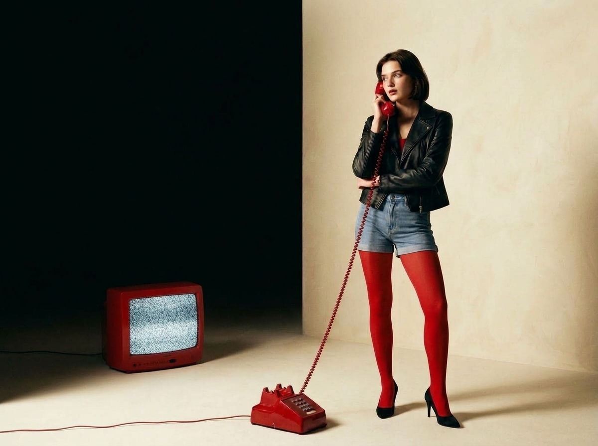
DIALUP is a fictional fashion e-commerce brand built around one question: what would it feel like if a fashion brand from 1998 came back online today?
"The brand is minimal.
The world around it is nostalgic."
The goal was never to recreate a literal 90s website. That would be a costume, not a concept. Instead, DIALUP set out to combine a clean, contemporary e-commerce structure with late-90s fashion editorial art direction, early-internet visual language, and analog atmosphere.
The result should feel like a modern fashion brand that somehow came back online from 1998 — unfamiliar enough to stop the scroll, intuitive enough to shop without thinking.
The target audience is Gen Z — primarily US and UK fashion shoppers aged 16–26. A generation that didn't live the 90s but romanticises them deeply. They recognise the references without needing a tutorial.
DIALUP speaks to that tension: the new discovering the old, filtered through a contemporary lens.
The palette starts with warm cream and deep dark — a classic fashion editorial combination that keeps the product photography central. Then a single, sharp red accent cuts through everything. Archive numbers. Callouts. Labels. Links.
Typography is restrained: a large-bodied serif for editorial moments and a clean sans-serif for all functional elements. Nothing decorative. Nothing that competes with the clothing.
Visual references came from late-90s fashion catalogues, early internet archive conventions, and CRT analog atmosphere. The aim was always specificity — not generic retro, not Y2K, not cyberpunk. Specifically late-90s early-internet fashion.
Every screen was art-directed to feel like a page from a found magazine rather than a component from a UI library.
The central design tension was this: nostalgia is atmospheric and slow; e-commerce needs to be fast and obvious. The entire project is an exercise in holding both at once without breaking either.
Every editorial decision had to pass a usability test. If a navigation pattern felt nostalgic but confused users, it was redesigned. The atmosphere had to serve the shopping experience, not compete with it.
The homepage is designed to introduce the brand world before it sells anything. Balancing the brand film, editorial moments, and the immediate ability to shop required careful information architecture at the homepage level.
DIALUP's visual language is unusual for e-commerce — archive numbering, CRT references, diary copy. The challenge was ensuring these aesthetic choices reinforced the product rather than creating unnecessary friction in the purchase journey.
Each collection needed a distinct visual personality while remaining unmistakably part of the same DIALUP design system. The same typographic structure, spacing, and interaction patterns — but with different editorial photography and tonal energy.
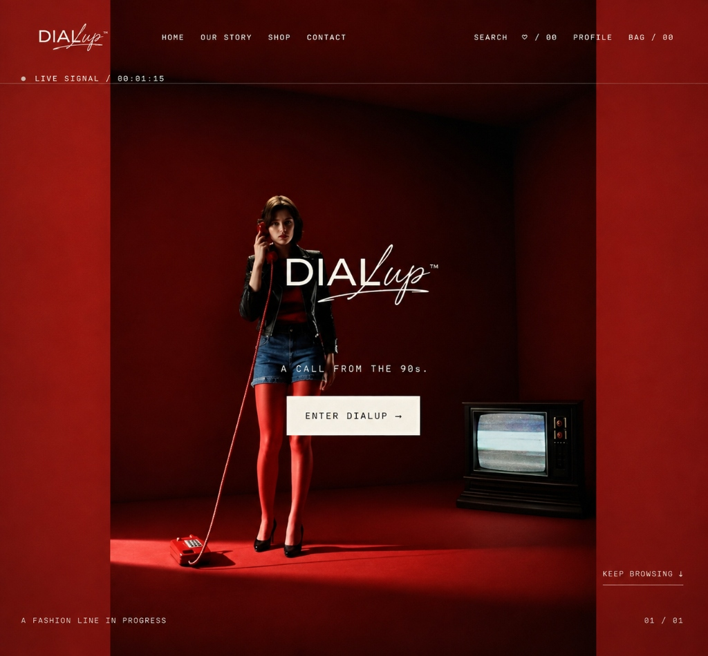
The homepage opens with a cinematic fashion film. The red room, the model, the vintage CRT television in the corner — all of it communicates the brand world before a single product appears.
The navigation is intentionally minimal. "LIVE SIGNAL" ticks in real time in the top-left corner — a small interaction that rewards attention. "KEEP BROWSING ↓" anchors the bottom-right like an editorial footnote.
The homepage structure: Hero → Shop The Look → Just In → Shop By Collection → Style Them Together → Our Story → Footer. Each section transitions the user naturally from world-building into shopping.
The Shop By Collection scroll uses alternating editorial images — a found-object aesthetic rather than a formatted product grid.
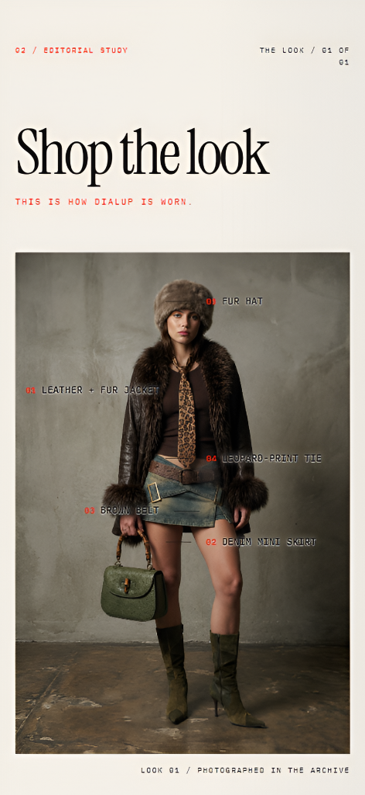
Instead of presenting products in an isolated grid, Shop The Look lets the user discover them through a complete fashion look. The model becomes the point of entry.
Products are numbered and overlaid directly on the editorial image — a catalogue convention that feels specific rather than generic. Tapping any numbered callout leads directly to the canonical product detail page.
"THIS IS HOW DIALUP IS WORN." — the tagline does the work. It's not a feature name. It's a declaration.
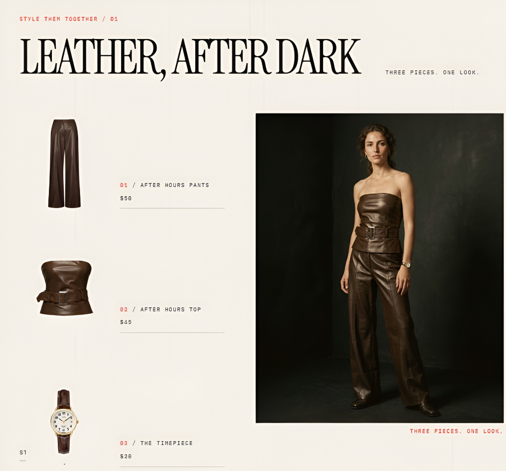
Style Them Together is a separate editorial interaction. Rather than suggesting individual products, it shows three existing DIALUP pieces together, styled on a model wearing all of them at once.
The left column lists each product with its price. The right panel is the editorial fashion photograph. The model makes the abstract combination real — you see how the pieces work together before you decide to buy any of them.
Each collection has its own visual personality — distinct editorial photography, tonal energy, and tagline — while the underlying design system remains consistent. Same structure. Same spacing. Same typographic hierarchy. Different world.
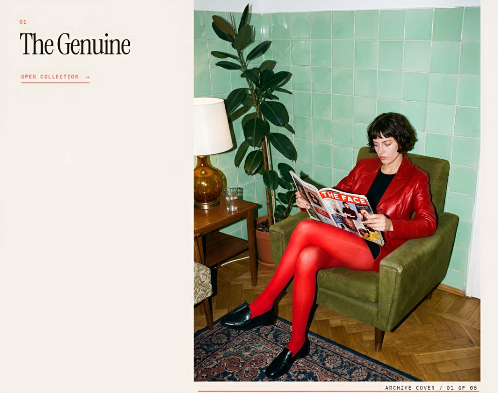
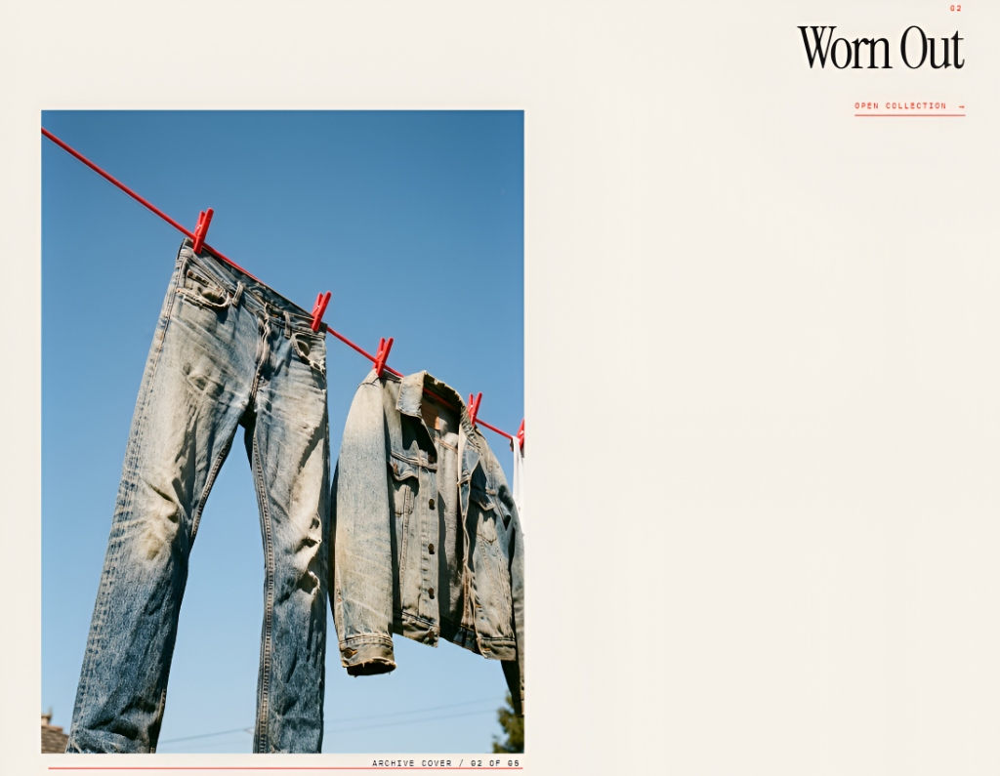
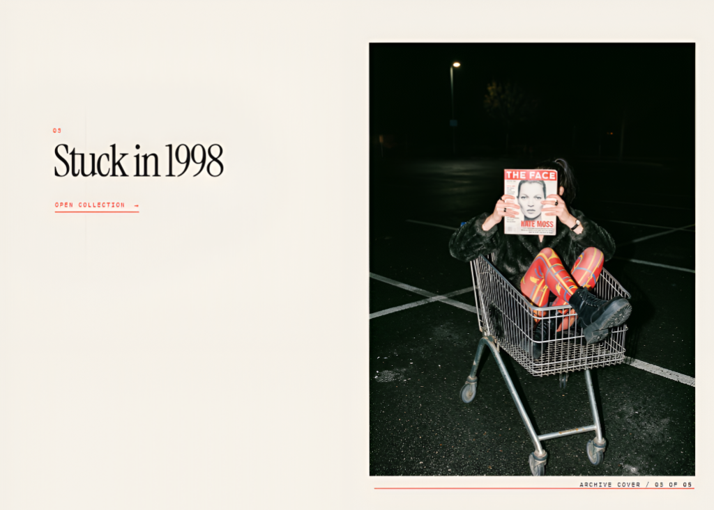
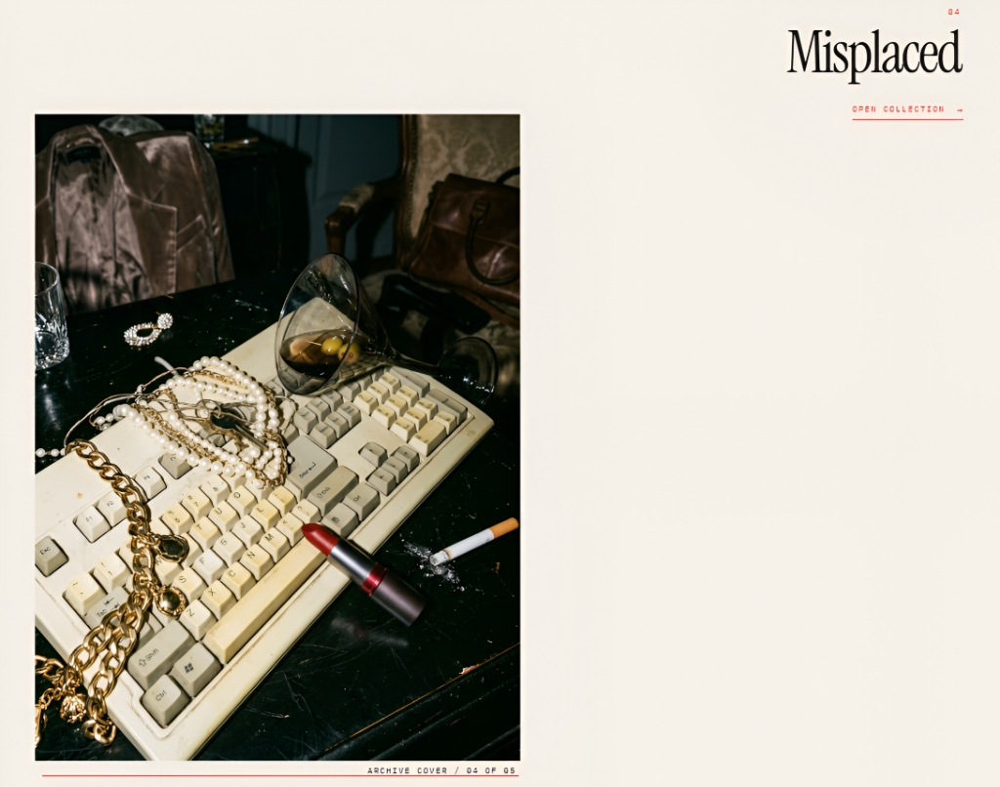
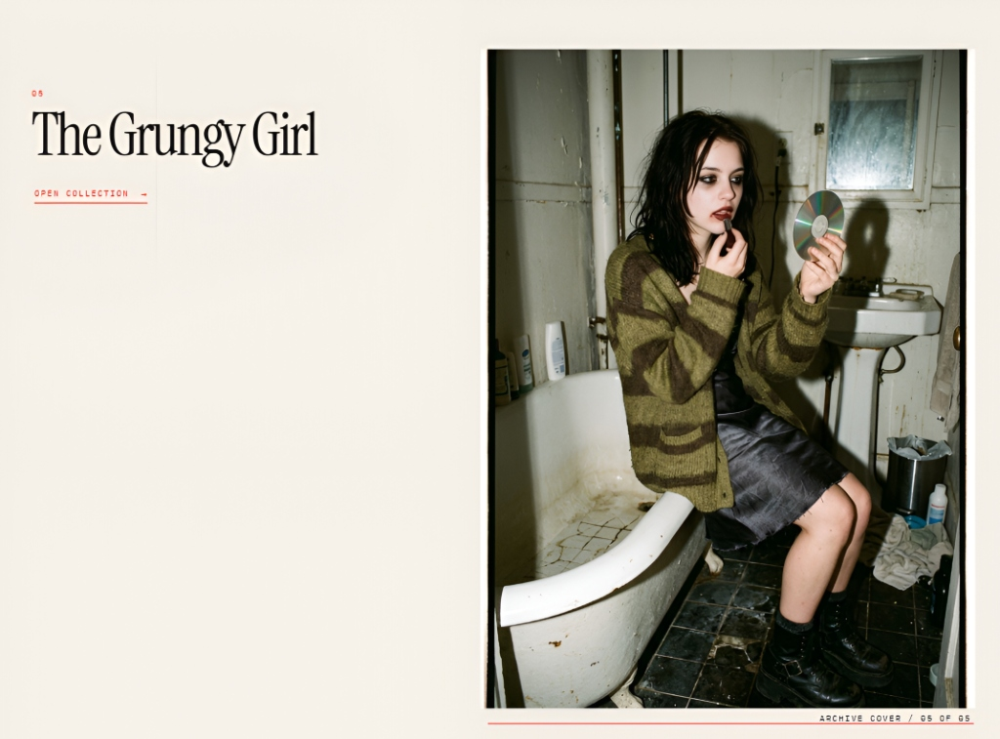
Misplaced uses found-object photography — an old keyboard buried under gold chains, a lipstick, a martini glass. It communicates "accessories" without ever labelling them that way. The image is the product description.
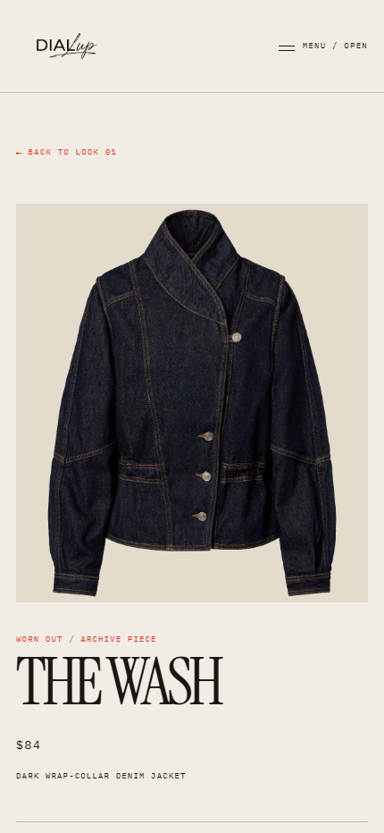
Every product in DIALUP exists in shared data. Whether the user finds it through a collection page, Shop The Look, Style Them Together, search, saved items, or the bag — it's always the same product, with the same image, name, price, and description.
The PDP layout is deliberately editorial: a large product image, the collection label in red, the product name in oversized serif type, price, description, size selection, Save and Add to Bag.
Nothing competes with the product. The interface recedes.
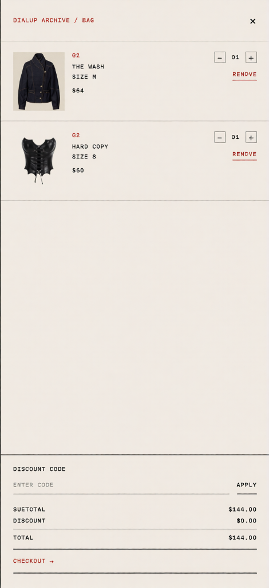
The bag drawer is designed as an archive receipt rather than a standard cart. Each item is numbered. The typography is monospace-influenced. The "CHECKOUT →" link at the bottom reads like a found document rather than a button.
The empty state — "BAG / 00 / NOTHING HERE YET. / KEEP BROWSING →" — maintains the brand voice even in a zero-state. It doesn't feel like an error message. It feels like the brand talking.
Quantity controls are minimal square inputs. Remove links are in red. The total is understated. Everything functional, nothing loud.
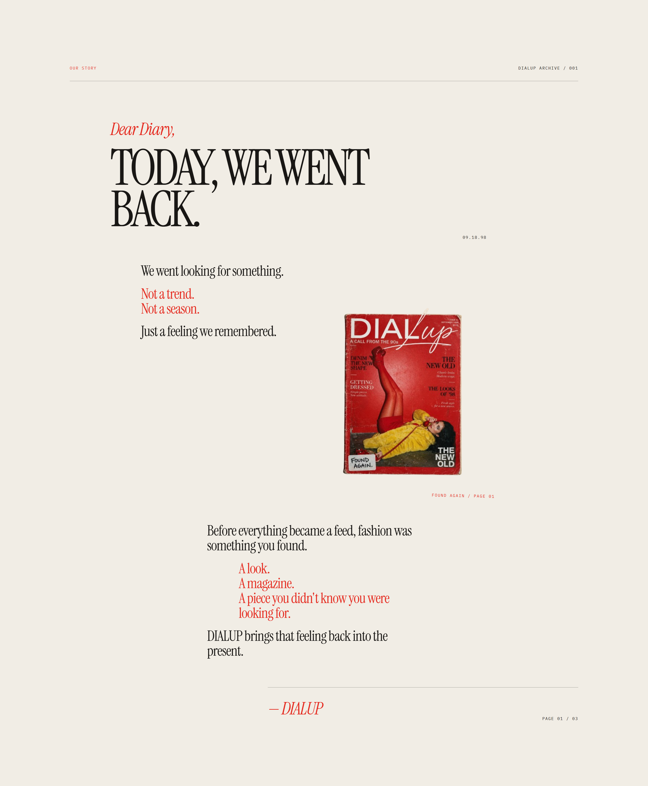
Our Story doesn't function like a standard About page. It opens with a diary entry — "Dear Diary," in italic red. Then the headline: "TODAY, WE WENT BACK." in massive black serif type. And a datestamp: 09.18.98.
The DIALUP magazine prop appears mid-page — a fictional artefact from the brand world. "FOUND AGAIN / PAGE 01." The page closes with the brand sign-off: "— DIALUP" centered at the bottom, like a letter ending.
Before everything became a feed, fashion was something you found. This section makes that feeling tangible.
DIALUP was a deliberate challenge: design something that has a strong, unusual visual personality and still works as a functional shopping experience. Here is what I actually learned from doing it.
Every nostalgic element in DIALUP earns its place by doing something useful. The archive numbering organises products. The CRT reference communicates the hero moment. The diary format gives the Our Story page a distinct voice. Atmosphere without function is just decoration.
Maintaining five collections that each feel different but unmistakably DIALUP required a strict design system underneath the editorial variation. Spacing, typographic hierarchy, the red accent, the archive numbering — these were the constants everything else could deviate from.
Designing multiple discovery paths (collections, looks, style, search) that all lead to the same product without inconsistency forced me to think about information architecture as a system rather than individual screens. Each entry point needed to feel native to where it came from.
Taking DIALUP from Figma into a working React implementation revealed where the design was fragile. Small details that looked intentional in a static frame — spacing, hover states, drawer transitions — had to be deliberately rebuilt in code. Implementation is the second design review.